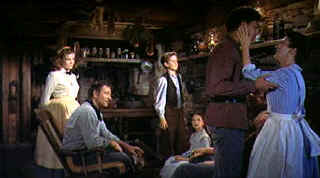

| Searchers, The/A, B |
| Warner/1956/119/ANA 1.85,FS 1.33 |
One of the most brilliant Westerns ever made! The relentless nature of the plot entangles an audience in a complex emotional web. Ethan Edwards, the war weary searcher, will not give up the hunt for his niece who was stolen away by the Comanche. The snows turn to sun-baked ground and to snow again and Edwards keeps coming. And coming.
 |
| A perfect Ford composition. ©Warner |
John Wayne has his finest
screen moments in creating the flesh and blood character of Ethan Edwards. There's a side to
Edwards that is easily recognizable as the hero of
many Ford directed screen outings, yet there is a hate burning within him that twists that ideal
and with it the notions of the film's audience. Jeffrey Hunter has a perfect freshness and innocence about
him that blends perfectly with the unyielding dried leather exterior of Edwards. His Martin Pawley
tempers the unswerving hatred that drives Edwards. The
casting is uniformly good with the exception of Natalie Wood, who seems simply out of place in this
film. The hard reality of this brilliant gem does after all have a flaw under a jeweler's glass.
Ford has never used his
favorite location of Monument Valley to greater advantage. The sweeping vistas that frame The
Searchers are magnificent. The photography of Winton Hoch captures it in all its majesty. This
may have been the longest film that Ford ever made at two hours and twenty-four minutes, but the
film moves at a remarkable pace. This is an utterly satisfying cinema experience.
The transfer print is
lovely for the most part, however, color registration problems crop up a number of times, taking
away from the overall beauty of the DVD. A full-blown restoration of The Searchers might be
in order. The colors are exciting. The images are sharp and breathtaking. Along with a
gorgeous theatrical trailer, the production includes excerpts from a television show, "Warner
Brothers Presents," featuring elements for a making of type documentary on The Searchers.
The treatment creaks with coyness, and it's more fun to watch as a relic of early television than
as an edifying view of the film. The mono sound is clean.
One of these days someone
will make a modern Western that will surpass The
Searchers. To lift a phrase from Ethan Edwards, "That'll be the day."

Selections from the Feature Archive include articles on
Akira Kurosawa, Blonde Bimbos,
Frank
Darabont, Steven Culp,
John
Herzfeld or Vietnam: The
Hollywood Pariah, and many more....
Director Walks the Wire
Balanced by an armor of movie lore and filmmaking daring, director John Herzfeld is comfortable
walking the high wire. Check out this interview by Stu Kobak.

Click on the image above for a "dream interview" with director John Ford.
The Movie Poster Archive includes extensive poster images from the films of stars like Susan Hayward, Kirk Douglas, Katharine Hepburn and many more. Our featured star is John Wayne

With the introduction of the Columbia Super Bit collection it looks
like a new wave of repackaging marketing might be just around the corner.
New Edition: Bit by Bit